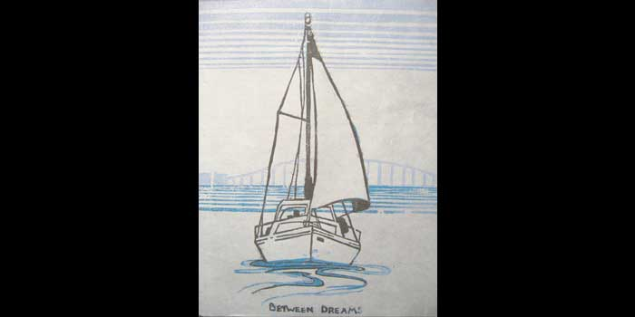

Are you an Artist? Need a place to display your art? We are looking for you! Please send us an email or call the salon if you are interested. We have shows monthly to show off the raw talent in our community. Please check in with us periodically, as we always have new work on display! Meet our current artist:
Jeslyn Kate
"I knew that I wanted to be an artist the first time that I was handed a crayon. I drew on everything in sight and could never be found without a pencil and a piece of paper. Even in high school, the margins of my notebooks were covered in drawings that told epic tales about fictional characters and classmates alike.
After graduating from Ringling College of Art and Design, I set off on an adventure that finally brought me to the San Francisco Bay Area. I currently work as a freelance illustrator out of my shoe box apartment in Concord with a very stuck up cat who insists on helping me paint. I also teach art to kids and find that it is a great source of inspiration! My students inspire me to look at the world from their perspective and turn “every day” events into the adventures they should be.
-

- 